| Название | Вид | Голод |
|---|---|---|
| Золотая морковь | ||
| Зачарованное золотое яблоко | 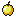 | |
| Золотое яблоко | ||
| Жареная говядина | 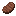 | |
| Жареная свинина | 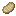 | Жареная баранина | 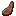 |
| Жареный лосось | ||
| Жареная треска | ||
| Жареная курятина | 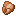 | Печёный картофель |
| Тушёный кролик | ||
| Жареная крольчатина | ||
| Сушёная ламинария | 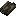 | Хлеб | 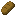 |
| Морковь | ||
| Тыквенный пирог | |
|
| Сладкие ягоды | Тушёные грибы | |
| Яблоко | ||
| Ломтик арбуза | |
|
| Печенье | Свёкла | |
| Картофель | ||
| Свекольный суп | 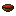 | |
| Сырая говядина | Сырая свинина | |
| Сырая баранина | ||
| Гнилая плоть | 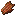 | |
| Паучий глаз | Ядовитый картофель | 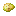 |
| Сырая курятина | 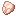 | |
| Сырая крольчатина | ||
| Сырая треска | Сырой лосось | |
| Тропическая рыба | 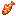 | |
| Светящиеся ягоды | 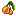 | |
| Плод коруса | ||
| Иглобрюх | ||
| Подозрительный суп | 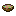 | |
| Бутылочка мёда |